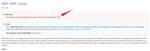

サーバーワークスエンジニアブログ
https://blog.serverworks.co.jp/
クラウド専業インテグレーター・サーバーワークスの中の人があらゆる技術についてお届けします。
フィード

【備忘録】AWS CodeConnections作成時に気をつけた方が良いこと 1
1
サーバーワークスエンジニアブログ
こんにちは。ディベロップメントサービス3課の平松です。 早速ですが、みなさん、AWS CodeConnections（以下、CodeConnection）使ってますか？ 私は会社から支給されている個人検証用環境で、GitHubとの接続用に作成していたのですが、お恥ずかしながら先日「あれ、このCodeConnection、どのGitHub組織/リポジトリと接続されてるんだっけ？」「権限ってどうなってるんだっけ？」となりました。（結構前に作ったっきりで、完全に失念していました。また、当時検証したパイプラインも削除していたため、完全に孤立したCodeConnectionが誕生していました。） ないと…
1日前
【やってみた】Sorryページを「CloudFront オリジンフェイルオーバー」で実装してみた
サーバーワークスエンジニアブログ
こんにちは。ES課研修中の田原です。 前回Route53 フェイルオーバールーティングのSorryページ実装をご紹介したブログに続いて、もう一つの代表的なSorryページ構成の「CloudFront オリジンフェイルオーバー」での実装方式を本ブログでご紹介いたします。 ※2024/10時点の構築手順となります。アップデート等で変更になっている箇所は適宜読み替えを実施してください。 ※Sorryページの各構成の構成概要やメリット・デメリットの紹介については、「AWSにおけるSorryページ構成について考えてみた」のブログをご参照ください。 blog.serverworks.co.jp 最終構成と…
1日前

【小ネタ】Aurora のスナップショットのアカウント間移行について
サーバーワークスエンジニアブログ
こんにちは。テクニカルサポート課の森本です。 暗号化された Aurora のクラスタースナップショット のアカウント間移行方法についてお問い合わせをいただくことがあり、自分の良い復習となったので記載します。 はじめに RDS との相違点 復元直後のパフォーマンスについて 移行先のアカウントでのコピーの必要性について まとめ はじめに 出オチですが、RDS の暗号化されたスナップショットのアカウント間移行については以下ブログの内容が相当詳しいです。 なので具体的な手順の詳細は以下ブログの内容をご確認ください。 blog.serverworks.co.jp こちらのブログは主にRDS(非Auror…
1日前

オンプレミスからの大型クラウドリフト案件でAWS利用料が高くなった理由
サーバーワークスエンジニアブログ
こんにちは、Enterprise Cloud部 ソリューションアーキテクト1課 の 宮形 です。 大型のオンプレミスからクラウドへのサーバーリフトプロジェクトを担当しておりますと、どのお客様からの期待が高いのが「コスト削減」になります。ところが、現状オンプレミスで動いているサーバーやネットワークの仕組みを洗い出し、それらをAWS上で動かそうとAWS利用料を試算すると「思ったより安くならない」「逆にコストが高くなった」というお話をお聞きします。 その理由は様々だと思いますが、本BLOGでは私がこれまで経験することが多かったその理由についてご紹介させていただきます。 オンプレミスのサーバースペック…
1日前


【クラウドコンタクトワークスペース】着信時に受電情報を表示する機能の設定と動作
サーバーワークスエンジニアブログ
サーバーワークスではAmazon Connect向けのカスタムフォン、「クラウドコンタクトワークスペース」をご提供しています。 こちらを利用して着信時に受電情報を表示する機能をご紹介します。 クラウドコンタクトワークスペースとは 概要 シナリオ 設定手順 電話番号を準備 コンタクトフロー作成 全体図 1.コンタクト属性を確認する 2.コンタクト属性の設定(5218) 3.コンタクト属性の設定(5219) 4.コンタクト属性の設定(一致なし) 5.作業キューの設定 6.キューへ転送 コンタクトフローの保存・公開 電話番号とコンタクトフローの関連付け 動作確認 末尾5218の番号へ掛けた場合 末尾…
2日前

Amazon Q Developerの/devコマンドを使ってみる
サーバーワークスエンジニアブログ
はじめに Amazon Q Developerの/devコマンド とは /devコマンドの詳細 Amazon Q DeveloperとAmazon Q Developer Agentの違い やってみた 実施環境 /devコマンドの実行 まとめ はじめに こんにちは！サーバーワークスの滝澤です。 前回執筆したAmazon Q Developerのブログから2ヶ月が経過しましたが、毎週のようにAI関連のアップデートがありますね！ 今回は機能がアップデートされたAmazon Q Developerの/devコマンドについて試してみたいと思います。 前回の記事はこちら blog.serverworks…
3日前

AWS CloudFormation でAWS Config有効化＆Configルール作成する際には依存関係に注意しよう
サーバーワークスエンジニアブログ
こんにちは！ カスタマーサクセス部CS5課で研修中の濱田です。 ところで皆さん、引越しの際には、Amazonの住所変更は確実に済ませておきましょう。高速道路に乗って前の家にポツンと置かれた置き配を取りに行くのは、あまり愉快なドライブとは言えません。 さて、マルチアカウント・マルチリージョンでAWS Config（以下Config）を有効化するとともに、Configルールも作成する機会がありました。このような場合、AWS CloudFormation StackSets を用いて、Configの有効化とConfigルール作成を同時に行うことが考えられるでしょう。 この時検証・構築時に出会ったエラ…
3日前

【小ネタ】ワイヤレスプレゼンターを使うと発表がやりやすくなる3つの理由 1
サーバーワークスエンジニアブログ
こんにちは。 DevOpsが好きなエンジニアの兼安です。 僭越ながら、私は弊社のウェビナーやスキルアップトレーニングでたまに発表をさせていただいております。 www.serverworks.co.jp www.serverworks.co.jp 何回か発表をさせていただき、少し慣れてきたかなと感じていますが、改善点はまだまだたくさんあります。 そんな中で、春頃から使い始めたワイヤレスプレゼンターが、発表をやりやすくしてくれていると感じています。 私の発表が上手いか下手かはさておき、今日はこのワイヤレスプレゼンターについて書いてみようと思います。 ワイヤレスプレゼンターとは 両手がフリーになるの…
3日前
【初心者向け】AWS CloudFormation を使用してAWS Config required-tags ルールを設定するときに初心者がハマったちょっとした落とし穴
サーバーワークスエンジニアブログ
カスタマーサクセス部CS5課でOJT中の濱田です。 引越ししてからは畳のある部屋を仕事部屋にしたのですが、やはり素足でウロウロするのが気持ちいいです。 さて、本題です。 AWS Organizationsで複数アカウントを一元管理するとともに、それぞれのアカウントにAWS Configを有効化し、Config ルールを一括で設定するという検証の機会がありました。 AWS CloudFormation StackSetsを使用してルールを設定したのですが、設定ファイルを書く際に、いくつか落とし穴にハマって抜け出すのに時間がかかってしまいました。 CloudFormationテンプレートのトラブル…
4日前

AWS Organizations の各ポリシーと継承について整理する (2024年10月版) 1
サーバーワークスエンジニアブログ
マネージドサービス部 佐竹です。2024年10月の最新版として、AWS Organizations における複数の組織ポリシーについて解説しつつ、過去説明した SCP の継承について最新の情報をお伝えします。特に「SCP は継承という用語を利用しなくなった」という点を深掘りしていきます。
4日前

DMSのトラブルシューティング(レプリケーションタスク編)
サーバーワークスエンジニアブログ
こんにちは。テクニカルサポート課の森本です。 ネットワーク編に引き続き、DMSのレプリケーションタスクで発生する問題のトラブルシューティング方法の概略を説明します。 レプリケーションタスクにおける細かなパラメータやデータベースエンジン毎の設定の内容ではなく、トラブルシュートの切り分けの観点を理解するためのエントリとなっています。 レプリケーションタスクの概要 フルロード(Full-load) CDC(Change Data Capture) フルロード + CDC レプリケーションタスクのコンポーネント フルロード Source Unload Target Load CDC Source Ca…
6日前

Microsoft Entra ID と IAM Identity Center を連携させて、AWS アカウントへのログインを実現させる
サーバーワークスエンジニアブログ
こんにちは、やまぐちです。 概要 ユーザとグループの管理をどこでするか？ Entara ID と IAM Identity Center の両方でユーザとグループを管理する場合（手動プロビジョニング） Entara ID 側のみでユーザとグループを管理する場合（自動プロビジョニング） 実際に設定してみる 手動プロビジョニングで Entara ID と IAM Identity Center を連携させる IAM Identity Center からメタデータファイルのダウンロード（AWS 側での作業） Azure 側での AWS IAM Identity Center との連携設定（Azure…
7日前
Terraformの設定について素朴な疑問について検証してみた
サーバーワークスエンジニアブログ
Terraformを使った設定の挙動を実環境で試してまとめました。IaCツールの設定変更やリソースブロックの追加方法など、実際のコード例とともに解説します。
8日前
【やってみた】Sorryページを「Route53 フェイルオーバールーティング」で実装してみた
サーバーワークスエンジニアブログ
こんにちは。ES課で研修中の田原です。 以前にSorryページの構成検討を考えるブログを執筆しましたが、 今回はその中でも一般的な構成である「Route53 フェイルオーバールーティング」の実装方法をこちらでご紹介致します。 ※2024/10時点の構築手順となります。アップデート等で変更になっている個所は適宜読み替えを実施してください。 ※Sorryページの各構成の構成概要やメリット・デメリットの紹介については、「AWSにおけるSorryページ構成について考えてみた」の前回のブログをご参照ください。 blog.serverworks.co.jp 最終構成と前提について 構築の流れについて ステ…
8日前
Step FunctionsでLambdaのエラータイプごとにエラーハンドリングするには？
サーバーワークスエンジニアブログ
こんにちは！サービス開発部の布施です。 先日食べた牧場のソフトクリームがおいしすぎて忘れられません。 ということでアイコンがソフトクリームに似ているAWS Step FunctionsでAWS Lambdaのエラーハンドリングがどんな感じでできるのか、という内容をしたためていきたいと思います。 Step Functionsの概要 Step Functionsのエラーハンドリング LambdaのエラーごとにStep Functionsで制御する 実際にやってみた 終わりに Step Functionsの概要 最初にStep Functionsの概要をざっくり紹介します。 Step Functio…
8日前

2024年9月頃にサポートの終了等が発表された AWS サービスまとめ
サーバーワークスエンジニアブログ
マネージドサービス部 佐竹です。2024年9月頃にサポートの終了等が発表された AWS サービスをまとめました。対象は AWS RoboMaker、AWS App Mesh、AWS WAF Classic、Amazon FSx File Gateway、Amazon Monitron です。
8日前
【初心者向け】DMS のトラブルシューティング(ネットワーク編)
1
サーバーワークスエンジニアブログ
こんにちは。テクニカルサポート課の森本です。 最近は比較的 DMS 関連のトラブルシューティングに対応することが増えており、自分のトラブルシューティング方法も兼ねて記録しておきます。 DMS のネットワーク構成についてざっくり理解する ネットワーク設定の確認事項 レプリケーションインスタンス側の設定 セキュリティグループ ネットワークACL ソース、ターゲットデータベース側の設定 セキュリティグループ ネットワーク ACL データベースエンジン側の接続情報 Tips まとめ DMS のネットワーク構成についてざっくり理解する DMSのネットワーク図 DMS では EC2 インスタンスをベースと…
8日前

Amazon Neptuneで始める初めてのグラフDB③ Amazon NeptuneとTom Sawyer Graph Database Browserとの接続
サーバーワークスエンジニアブログ
こんにちは。 DevOpsが好きなアプリケーションサービス部の兼安です。 本記事は「Amazon Neptuneで始める初めてのグラフDB」というテーマの連載記事の3回目です。 Amazon Neptuneで始める初めてのグラフDB① NeptuneクラスターとNotebookの作成 Amazon Neptuneで始める初めてのグラフDB② Gremlinを用いたグラフデータの基本操作 Amazon Neptuneで始める初めてのグラフDB③ Amazon NeptuneとTom Sawyer Graph Database Browserとの接続 本連載記事の目標 第3回目の目標 Amazon…
10日前
【初心者向け】Amazon Bedrockで画像生成してみた
サーバーワークスエンジニアブログ
Amazon Bedrockで新しく利用可能となったTitan Image Generator G1 v2を紹介！簡単に画像生成や編集ができる方法をステップバイステップで解説します。
11日前
【初心者向け】10分でできるAmazon Bedrockのテキスト生成
サーバーワークスエンジニアブログ
AIと機械学習の初心者向けに、Amazon SageMakerを使ってAmazon Bedrock APIを実行する方法を解説します。手順とメリットを説明
11日前
【Amazon Aurora MySQL】ProxyがあるAurora MySQLでBlue/Greenアップグレードを実施したい場合の手順 1
サーバーワークスエンジニアブログ
垣見です。 通常ProxyがあるAmazon AuroraではBlue/Greenアップグレードをすることはできませんが、無理やり実施するとどうなるか手順をまとめました。 基本おすすめはインプレースアップグレードやバイナリログレプリケーションでのアップデートですが、それらとの比較やBlue/Green Deloymentsの仕様の把握の手助けになれば幸いです。 また、Proxy付け外し関連の項目を除けば通常手順としても使うことが出来るので参考になればと思います。 はじめに ちなみに このブログでやること 概要 作業の流れ 対象 注意事項 バージョンアップ手順 - 事前準備 1. Green環境…
11日前
【超初心者向け】AWS未経験から見たAmazon Connectってどんなサービス？
サーバーワークスエンジニアブログ
こんにちは、アプリケーションサービス部 営業課の工藤です。 私は、2024年にサーバーワークスに入社しまして、ゼロからAWSを勉強中の超初心者です。 そんな私が初めて触れたAWSのサービスのAmazon Connect についてご紹介したいと思います。 Amazon Connectって何？ どんなことができるの？ どのような環境で使えるの？ 料金はどうなっているの？ まとめ Amazon Connectって何？ Amazon Connectは、電話を使ったカスタマーサポートをクラウド上で簡単に始められるサービスです。 企業がお客様からの電話対応をするためのシステムを手軽に作れます。 便利なポイ…
13日前

AWS Organizations 環境で AWS Security Hub 中央設定を使用し、一元管理をする手順
サーバーワークスエンジニアブログ
カスタマーサクセス部の井出です。 AWS Organizations 環境で AWS Security Hub を一元管理するための「中央設定」を設定する手順を記載します。 中央設定とは 設定手順 マネジメントアカウントでの作業 1. 統合 1-1. CloudShell を起動し、下記コマンドを実行して「信頼されたアクセスを有効」にします。 1-2. 下記コマンドを実行して「信頼されたアクセスが有効」になったことを確認します。 2. Security Hub 有効化と委任 2-1. Security Hub の画面から「Security Hub に移動」を押下します。 2-2. 「委任された…
14日前
Amazon CloudWatch Logsのメトリクスフィルタとサブスクリプションフィルタの設定方法
サーバーワークスエンジニアブログ
Amazon CloudWatch Logsでのメトリクスフィルタとサブスクリプションフィルタの設定方法を詳しく解説。AWS CLIを活用した効率的な方法も紹介しています。
15日前
AWSにおけるSorryページ構成について考えてみた
サーバーワークスエンジニアブログ
こんにちは。ES課で研修中の田原です。 研修中にAWSでSorryページをどのように構成するのが適切なのかを考える機会があり、 AWSで実装するSorryページ構成は奥が深いと感じましたので、その内容を共有できればと思います。 Sorryページとは？ 検討の前提 と Sorryページ構成パターンの概要 各Sorryページ構成パターンの詳細 構成1：Route53 フェイルオーバールーティング 切り替わり方式 構成のポイント メリット デメリット（制約） 構成2：CloudFrontオリジンフェールオーバー 切り替わり方式 構成のポイント メリット デメリット（制約） 構成3：ALB 固定レスポ…
15日前
Amazon CloudWatch Logsのメトリクスフィルタとサブスクリプションフィルタの違いについて解説
サーバーワークスエンジニアブログ
CloudwatchLogsの活用方法を解説！メトリクスフィルタとサブスクリプションフィルタの特徴や違いを丁寧に紹介します。
16日前
Amazon Neptuneで始める初めてのグラフDB② Gremlinを用いたグラフデータの基本操作
サーバーワークスエンジニアブログ
こんにちは。 DevOpsが好きなアプリケーションサービス部の兼安です。 本記事は「Amazon Neptuneで始める初めてのグラフDB」というテーマの連載記事の2回目です。 Amazon Neptuneで始める初めてのグラフDB① NeptuneクラスターとNotebookの作成 Amazon Neptuneで始める初めてのグラフDB② Gremlinを用いたグラフデータの基本操作 本連載記事の目標 第2回目の目標 Gremlinとは プロパティグラフの用語 Gremlinを用いたグラフデータの基本操作 頂点の登録 登録した結果を確認 頂点の登録と確認のPythonコード idを指定した頂…
16日前
【Cards構成例あり】JAWS-UG千葉支部 「AWS BuilderCards体験会」に参加しました！
サーバーワークスエンジニアブログ
垣見です。 2024年9月6日、JAWS-UG千葉支部の第3回「AWS BuilderCards体験会」に参加してきました。このイベントはオフラインでの開催で、AWS BuilderCardsの遊び方について、参加者と一緒に実際に遊びながら学べる体験型のイベントです。 JAWS-UG千葉支部 #38(オフライン開催) 第3回「AWS BuilderCards体験会」 - connpass 今回のブログでは、その体験を振り返りつつ、感じたことや学びをレポートし、さらに、後日勉強のために復習したやり方を記述します。 ※イベント運営の方やブログ内で紹介した方からはブログ公開許可を取得しています。あり…
17日前
Database on EC2構築時の言語設定の注意点
サーバーワークスエンジニアブログ
こんにちは！！コーヒーでスイッチが入るコーヒー好きな流川です。 本記事ではEC2インスタンスをDatabase on EC2で構築する際の言語設定の注意点に関して記載します。 Database on EC2とは 注意点 選べる言語バージョンについて Database on EC2のデフォルトの言語設定 日本語版AMIを選択する方法 まとめ Database on EC2とは ユーザーが独自に設定・管理するデータベースを含んだ仮想サーバー環境です。 データのバックアップやセキュリティの設定などは自身で行う必要がありますがEC2起動時に好きなデータベースを選択し起動できる点が魅力です。 インスタン…
17日前